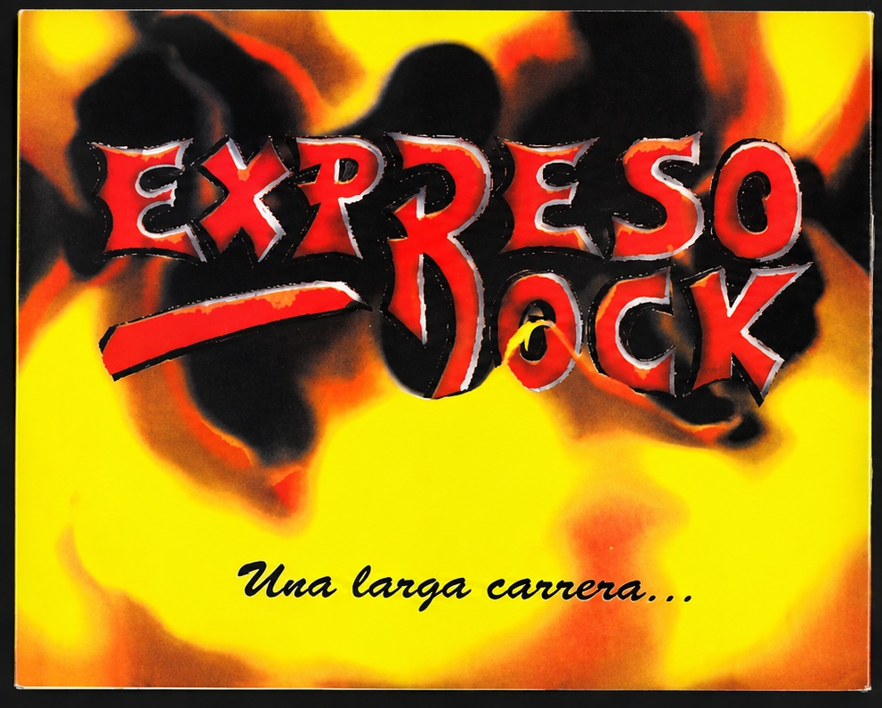
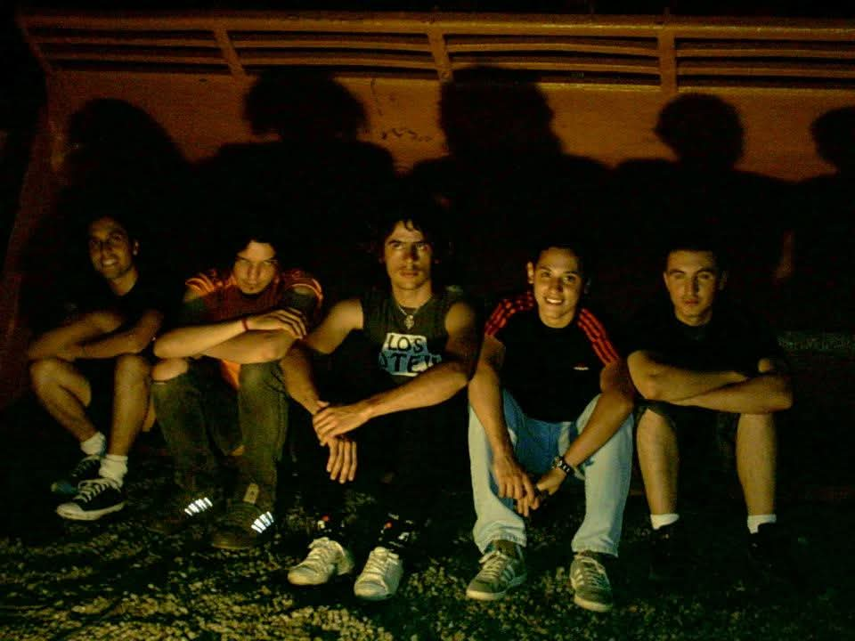
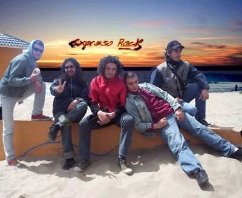
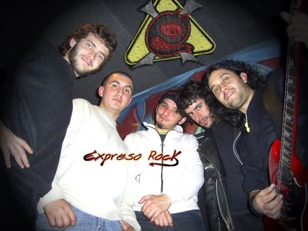
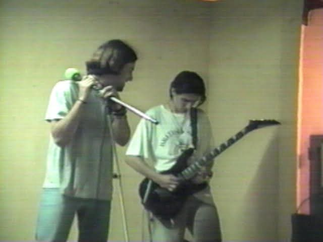
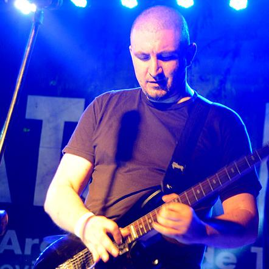
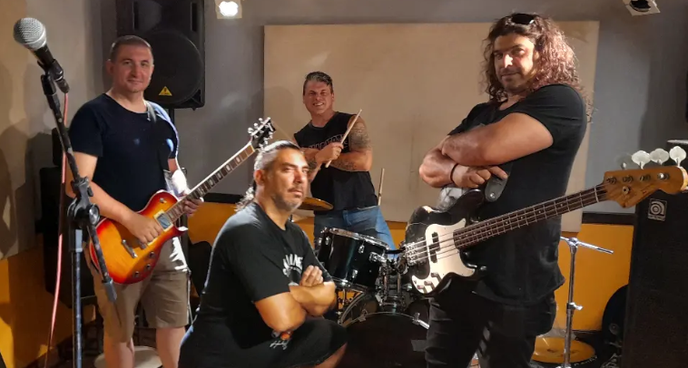
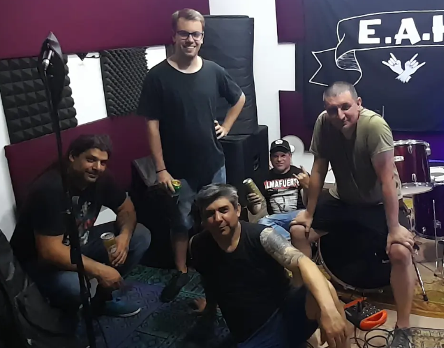

Archivo
Material histórico
Grabaciones, videos y fotografías conservadas de proyectos anteriores. El archivo prioriza material original y datos que pueden reconstruirse con suficiente certeza.

Expreso Rock
Rock directo, encuentros motociclistas, festivales y escenarios de Buenos Aires y del interior. El primer disco de cinco canciones y dos grabaciones adicionales fueron recuperados y publicados como archivo histórico.




E.A.H. — Estamos al Horno
Hard rock y blues-rock con una fuerte impronta de reinterpretación y arreglo. La banda permaneció activa hasta diciembre de 2024.


